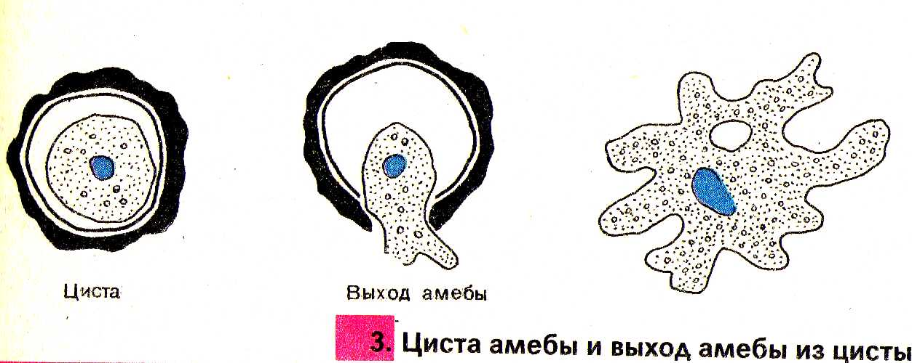

Амёба

Среда обитание, строение и передвижения амебы
Средой обитания данного вида амёб являются пресные водоемы со стоячей водой, в частности, в болота, загнивающие пруды, а также аквариумы. Амёба протей встречается по всему земному шару. Обитает на дне пресных водоемов со стоячей водой, особенно в гниющих прудах и болотах, в которых есть много бактерий. Они похожа на маленький (0,2-0,5 мм), едва заметный простым глазом бесцветный студенистый комочек, постоянно меняющий свою форму (амеба значет изменчивая ).
Амеба состоит из
Тело амебы состоит из полужидкой цитоплазмы с заключенным внутрь нее небольшим пузыревидным ядром. Амеба состоит из одной клетки, но эта клетка - целый организм, ведущий самостоятельное существование.
Движения амебы
Амеба передвигается при помощи ложноножек - специальных выступов, которые образует ее тело за счет тока цитоплазмы. Выпуская ложноножки в определённом направлении, амёба передвигается со скоростью около 0,2 мм в минуту.
Питание
Питается амеба одноклеточными водорослями, бактериями, детритными частицами, которые она обтекает своими ложноножками и фагоцитирует. Образовавшаяся фагосома в цитоплазме сливается с лизосомой, в результате чего формируется пищеварительная вакуоль.
Дыхание
Амеба дышит растворенным в воде кислородом всей поверхностью тела. Насыщенная диоксидом углерода вода удаляется из организма через сократительную вакуоль.
Выделения вредных веществ жизнедеятельности и избыток
Вредные вещества удаляются из организма амёбы через поверхность ее тела, а также через особый пузырек - сократительную вакуоль. Окружающая амебу вода постоянно проникает в цитоплазму, разжижая ее.
Размножение
Размножение. Амеба размножается бесполым путем - делением на два. Сначала втягиваются псевдоподии и амеба округляется. Затем происходит деление ядра митозом. На теле амебы появляется перетяжка, которая перешнуровывает его на две равные части.

Циста
Когда наступает осень амёба перестоёт питаться, её тело стоновится округлым, на его поверхности выделяется плотная защитная оболочка - образуется циста. Циста – это покоящаяся стадия амебы. Она представляет округлое образование диаметром около 15 мкм с двойной оболочкой.
